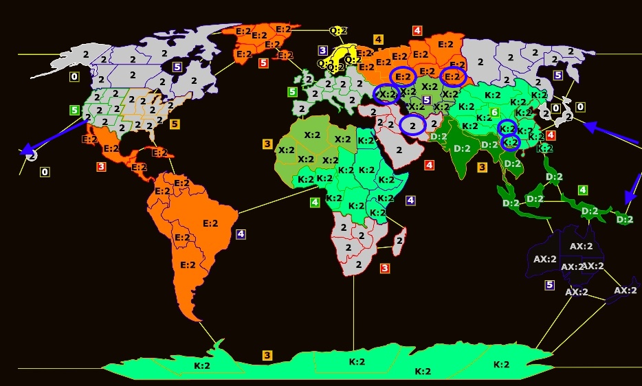
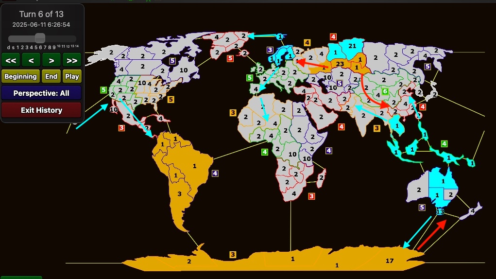

Strat ME
In short: Are there dominating FTBs that come with T1/T2 contact? Pick them. If not, find the best bonuses and regions on the board and set up your picks in a way that gives you an advantage of any kind (more income, more armies, a double border, a stack, position, safe income, whatever) on a specific turn.
Settings
- Weighted Random distribution.
- 3 starting territories with 4 armies each.
- +5 base income.
- Neutrals of 2, and 4 on territories in the distribution.
- 7 wastelands of 10 armies.
- Random move order.
Map Overview / Dynamics
Well, the map has been studied extensively, so a lot of what I list here is repetition.

AX: over 60% win rate
Europe and Australia have 70% and 68% win rates. I'm not including Europe on the map because it has 12 wins in 17 games; it's practically a counter-pick, with like 2–3 exceptions: here from Forsaken in CL18 as a triple pick (similar idea here), here from Rufus as an actual bonus, and here by Juan, combining UK + Greenland to counter Scandinavia (it didn't work, but that's the idea). Besides these niche and innovative applications that can work, it's really just a Scandi + Europe FTB angle (Gak vs Kage, same), or a counter-pick to that very FTB, like here by both players.
Australia is a spectacular bonus in that it:
- is a combo +5 with one double border, very safe, and 2 turns away from Asia;
- has incredibly fast expansion into Indonesia, the second-best bonus (example);
- can defend itself very easily with a blockade from Antarctica by baiting resources, and this goes both ways (here, here);
- works as an FTB with Antarctica (example).
D: over 55% win rate
Southeast Asia (SEA) and Indonesia. Indonesia follows the same principles as Australia: single borders make it easy to defend, it has great expansion, a pathway within 2 turns to the major income regions in West US/CA and WC, and it can stop expansion from Antarctica. SEA is a versatile bonus, as it is 2 turns away from breaking every single bonus in Eurasia. You'll find in your games that SEA is not only really hard to break, but also gives you flexibility when you drop it, as it is even harder for your opponent to eliminate you.
In SEA vs Scandinavia or SEA vs WR/CR boards, as the SEA player you have pathways from Iran and the Caucasus into breaking those bonuses. Simple plan: build a stack, then kill. This extends to the overall downside of the Scandi/WR/CR region: it is easy to break. Here Octane is down 8 income but has a simple plan of getting in there and punching with a stack. Coming back to SEA vs Scandi/WR/CR:
- You build a stack Iran → Georgia and break WR.
- They build a stack Xinjiang → Pakistan and break SEA.
After the break, if you had SEA + Indonesia, they are 4 turns away. If you had SEA + somewhere else on the map, they have a bunch of useless armies in Pakistan and will never eliminate you, because the bonus is a straight line. Your stack is in a better position. For example, here, as much as Rufus broke SEA, it is impossible for him to move towards Indonesia. A couple of turns later Rufus breaks Indonesia from Hawaii, but those armies are again misplaced, and this gives Njord just enough tempo to pivot.
K: over 50% win rate
The Africa bonuses, Antarctica, WC and EC. All of these come in different conversations.
On Antarctica and Asia: Antarctica is an incredible bonus, absolutely fascinating. It can combo with Australia or SA for +4 or +5 in 2 turns, has single borders so it's easy to defend, has an entrance to Africa, and can be flexible in baiting resources. It is a slow bonus, that is all. In some distributions you have to realize there are better options than just a very safe remote +3 bonus. For example, here Njord simply triple picks Asia: if you get Tomsk and Iran, it is so easy to defend, despite the fact that Aura has, in theory, safer income. In contrast, here I make it in time just barely, and Beep misplays by sending useless armies to Indonesia instead of securing Asia. This gives me a great opening to discuss the Asia bonuses: EC is a great single safe +4 bonus, and WC can be a counter, a double pick with SEA/WC/EC, or a triple pick.
Africa is conflicted. It can be really good. It can be god awful.
X: high win rate, but mainly counter-picks
The X bonuses have high win rates, but they are mainly counter-picks.
Q and E: Scandinavia at exactly 50%, E over 43%
Starting with Scandinavia: it is a great pick, just slightly over-picked by people who don't want to calculate the position more than 2 turns ahead. Scandinavia generally shines if it can reach Ufa with a stack and break CR, or has expansion into WR, EU or Greenland. If you don't reach Ufa, like here, the game's lost.
- Combos with Greenland for a combo +5: here, here and here. Incredibly powerful, but dependent on first pick. Pay attention to how the players expand using a 3-army attack from Svalbard, so that if it doesn't work they can recapture next turn, usually without deploying (WR 101).
- Combos with Greenland for an FTB: example, failed example, a weird example of how not to pick your 5th and so on.
- More niche combos for a slower income transition, like here and here.
The key difference between these three categories is timing, something extremely important in every template and especially in modified Earth ones. If you pick an FTB, you want to fight on T1/T2. If you pick a combo +5 with a counter, you (often) want some configuration going into a double border on T3/T4, but generally want to avoid contact earlier. If you pick for slower income like the above (16/17/18 by the end of Turn 4), you don't want contact until Turn 5, and you want a position that counters your opponent's expansion on T5/T6.
CA and SA are very popular picks for straightforward reasons. In a handful of distributions you can check the board and within one second do 1/2 on SA and CA, then 3456 in Asia in some contested, income-rich region. Sadly, this can work. It is a strategy that revolves around getting to 9 income and playing the 9v8, 9v9 or 9v11 income game with safe income. A simple example is this game, where tornado does 3456 on an EC FTB with 4 spawns. Another example here, with both players committing to the 1/2 SA and 3456 Asia combos. At the same time, these bonuses are individually really strong, and a tiny bit overrated.
- CA shines as an FTB. For example, here Rufus' idea on picks is straightforward: pick the FTB and 3/4 neighbouring territories, then fight and eliminate. Another example here with a different configuration of FTB CA and Asia combos. In these setups the game is generally all about tricks, card pieces and above all army advantage, as that is something that can be converted into an advantage and later a win.
- SA combos with many different bonuses and generally provides a safe +4 bonus with nice proximity. That said, it can be slow if you don't get contact the turn after completing it, or if you don't have information. For example, in SA/CA vs EAf setups, if you don't know about EAf and they hit Nigeria with a stack while you are expanding through Antarctica or Hawaii, say bye to +8 income.
- WR/CR are very easy to complete and sit in an income-rich region, which is however very accessible. Scandi vs CR: whoever gets Ufa wins. WR vs WC/EC: if you get to Tomsk you can win; if not, press the red button.
Picking
Repeating something I said earlier, Strat ME is a lot about timing, and then building an army advantage. Timing of contact comes into effect in picking, as you want to find a configuration that lets you have more income or armies, in a better position, on a turn of your choice.
That said, 7 out of 10 Strat ME games are about specific combos that are extremely strong and that you have to cover on 1/2 or 1/3. This dictates the way you order your later picks. For the sake of simplicity, let's say you always 1/2 the bonus. (1/3 comes up in situations like Svalbard/Nuuk spawns in Greenland/Scandi, where your 3rd pick is useless without the first, though the pick combinations are still the same: you can get 1/2/5 or 1/3/5 and so on. The real difference comes when your opponent doesn't have the same first pick. In that scenario, if he is first pick, you get the 1/2 Greenland combo and not 1/3. In this template specifically it matters less, since it's random move order. In MME you could argue that getting 1/3 and suspecting your opponent first-picked your 2 hints at him being first pick. Whatever.)
- 1/2 FTB CA/Ant/SEA: you want to look for immediate contact or contact on Turn 2/3. Use the income advantage to your benefit.
- 1/2 on a +4 bonus secures its completion. A solo pick +4 is a 96% gamble (bomb of strategicness). A combo +4 and a counter on T3 with a 4-army attack, or on T4 with a stack, works in your favor. Stuff like CA/SA/WR spawns: get SA in two, move to Ufa with 4 armies at the end of Turn 2, 9 vs 9 income vs a completed CR, and all in. Later picks can be neighboring or not.
- Setups like 1/2 CA, SA, 3/4 another combo, 5/6 another combo, where 1/3/4 gives you a safe +4 and a fight on 1/2.
- Or setups like 1/2 CA, SA, 3/4/5 region coverage, 6 counter-pick or single pick.
- Or 1/2 combo, 3 single pick, 4/5/6 cover.
- All of these are a matter of perspective, play style and flexibility. 4/5/6 coverage with a safe single pick on 3 always risks getting 1/2/3 and losing to a triple pick. Generally speaking, it also puts first pick at a great disadvantage: if you full mirror, 1/4/5 will lose to 2/3/6, because first pick has 3 contested picks and second pick has 2. But nothing is absolute; it all depends on your distribution.
- A combo +5 for safety requires contact a bit later.
- In the other 3 out of 10 distributions, you can't find combos that govern income regions and demand priority, so single picks come up (or even triple picks for WC/EC/SEA, or EU/Greenland/Scandi, and triple Africa, though that's very rare), and slower income comes into play, MME style: typically 12–14 income by the end of Turn 3 (+4 and +5 bonuses for 14, +4 and +4 for 13, etc.), or 16–18 income by the end of Turn 4 (+5/+5/+3 for 18, +5/+4/+3 for 17, etc.). A slower income transition means remote bonuses that you can complete safely and set up contact later, either on the reinforcement card turn (T5) or even later, in the bonuses your opponent will expand into.
Gameplay
Strat ME has been one of the most popular templates, as a) it was the old 1v1 ladder, b) it's been featured twice as the seasonal ladder (Season 38 and Season 21), and c) it has been selected in multiple strat competitions (AWP 2024, AWP 2023, AWP 2022 (you can find more in the AWP 2016–2021 sheet), ML3, CL18, CL16, CL14 and more). It is quite possibly the most tested, studied and thoroughly discussed template. On top of that, most of the existing guides, like GG's guide, are about this map and settings.
From my experience, Strat ME is the best template to experiment with, apply and understand a lot of WR tricks and methodology around expansion and gameplay. When ahead, the game is about converting that lead into something of substance: an elimination, a big army advantage, a bonus capture, etc. When behind, the game is about playing for your win conditions, even if that includes the most lunatic random strategies in existence. To be honest, this is my main advice for this template: understand what needs to be done for you to win the game, and do it, regardless of its nature.
Example: my game vs Octane
First example, a recent game of mine vs Octane. The board has roughly 3 regions, SA, Europe and Asia, and the easiest way to simplify the board is 1/2 SA into 3456 Eurasia. Getting 1/2 guarantees safe income and a coverage spawn. Splitting 1/2 comes with early fights and contests on multiple fronts. I was conflicted on these sets, if you can follow my logic, or if it makes sense in the first place. I can see sets like the one above that follow one of three paths:
- a) 1/2 SA, 3 EC, 4/5 CR WR, 6 Scandi.
- b) 1/2 SA, 3 Scandi, 4/5 WR CR, 6 ER.
- c) The set Octane went for: 1/2 SA, 3/4 CR WR, 5 Scandi, 6 EC.
Besides these sets, there are some more niche strategies:
- d) 1/2/3 Europe CR/WR/Scandi, 4/5 Ant SA, 6 WAf (or Australia).
- e) My set: 1 Scandi, 2/3 SEA/Indo, 4/5/6 SA, Ant, WAf.
At this point, before going in depth into all 16 match-ups between sets a–d, ask yourself what outcome you want 1, 2, 3 turns into the game in order to convert it into a win. From Octane's POV, you sort of expect mirroring on 1/2, pick CR in case you get 1/2/3 to threaten both EU and EC, and hope for a positive outcome as second pick with 2/3/4 and the EC combo. From my POV, I pick planning to get one of the following: 1/2/3, 1/3/6 or 1/3/5, or 2/3/6. With 1/2/3 I do what I did in the game: rush to Ufa with a stack, which perfectly aligns with the reinforcement card on Turn 5, break, and have Indonesia to counter SA/Ant expansion into Australia. 1/3/5 and similar sets are pretty wild but possible, as they have Octane picking the EC/SEA combo and either SA or Ant; I have Scandi into Indonesia completion on Turn 3, into blasting SEA on Turn 4 with +12, which is ok. 2/3/6 is the ideal outcome. My set isn't foolproof, but it is unexpected, which can be both good and bad. It's bad because I'm deviating from the best picks, and a good player will punish me. It can be good because my opponent might waste resources in the wrong region, having to guess. Ask 50 good WR players and I can guarantee you at bare minimum 45 will pick the SA combo.
This is where my motto in WR surfaces: "Find the line that can either get you back in the game or convert the advantage, and either lose trying or win doing so." I picked this way planning to break CR on Turn 5, knowing I'm playing against CR/SA/Ant or WR/SA/Ant (against the latter the game is easier for me). I can't deviate, and if I fail the Turn 5 break, I lose: surrender Turn 5, gg wp. My pickset is fundamentally flawed in relying on such a coin flip, although that's part of the game. By Turn 6 the game is 12 vs 12 income, with somewhat equal armies on the field. It is now a game of chicken, where we both stack armies, hope the other person makes a mistake, play mind games, and stall.

Positionally, taking the figure into account, you need to evaluate the position and ask yourself what the best course of action is for both players. I'm in an equal-income, −6 armies position, where I hang by an edge but threaten a lot. Octane is stuck in a corner and has to take the initiative, or react (early or late) to something I plan.
My options:
- Expand towards SA from EU and get the bonus. Very slow; Octane will get an enormous army advantage elsewhere in the meantime and pivot there, either CR and the region, or Aus/Indo.
- Expand into Greenland, which is slow but safe. It can sort of work, because the natural options, expanding into SEA or EC, are ones Octane can easily cover within 3 turns. I would undoubtedly lose Australia there though, same for SAf, and maybe even CR.
- Start a journey to CA, which I can do, but I would have to abandon Australia.
- Start faking everything, hiding deployments and hoping for the best.
For Octane, he absolutely has to all-in me in one of the following turns to get an army advantage; there isn't any other way to convert his advantage. Ideally he all-ins Tasmania twice in a row and snowballs the game from that army advantage. If he can't figure out what I'm doing, it gets tricky. If I expand into Greenland, drop Australia and he thinks I'm in EC/SEA, I get a tempo edge, as he will have wasted armies in Asia. If I expand into SEA/EC and he spots it, I'm lost. But if I expand into Greenland and he doesn't fall for the bait, he can eliminate CR, Australia, or both. Play style comes into play here.
My view is that expanding mindlessly here is almost certainly a loss, and the only course of action is muddying the waters and taking advantage of the fact that Octane has to react to ghosts. So on Turn 7 I full-deploy and drop back to salvage army losses and get a one-turn tempo lead, at a distance of one territory between us. That way, on Turn 8 he cannot attack my stack. On Turn 8 I minimize losses in CR, stay idle in an important territory, and deploy behind the fog, baiting SEA/EC. On Turn 9 I have to react to the army disadvantage in CR and must fall for the bait. If I don't and get wiped it's tough, but I leave my options open: transition towards WR, secure my stack, and let him expand. He has to react to SEA/EC/Greenland, and SAf plus counters are the course of action.
Miracle number 2: on Turn 10 I win the random move order coin flip, and now the position is winning for me (even if I had lost the flip, I'd get a spectacular trade, just not as good). My maneuver from T7, getting a tempo win to save my stack up to T10 for a favorable trade, was precisely for this moment. If he doesn't overextend there, I will build a stack and break Antarctica even if I have to deploy 50 armies for it, since he has already chosen to move towards SEA/EC, and I can now get card pieces in WR to match his SAf (and Australia).
The game isn't about making a comeback anymore, but about converting the advantage, so the plan changes: gamble Australia, which is harmless, because if he counters, I'll use one of the 2 territories in Tasmania and New Zealand to break Antarctica. Complete CR, maybe even EU, and let him come to SEA/Indonesia.
Miracle number 3: out-delay him and guess the right territory on Turn 12 (I misplayed, I should have secured the out-delay, but god showed mercy).
My point at the end of the day: if you pick recklessly, or generally get into tough positions where whatever you do you'll slowly lose positionally, find your win conditions. For me it all started with acknowledging that I picked like a clown and the game is unplayable if I don't succeed in the Turn 5 flip, followed by the mind games, the tempo swing on T7 and the army advantage push between T7 and T10.
Other examples from CL and other competitions
- CL16 Octane/adrenaline. It's an 8 vs 8 income game with 2 different fronts, so the game is all about the balance between army advantage and card pieces. By T4 Octane takes the L in Africa, tries to get any army advantage he can in NA on T5, and keeps the reinforcement card to salvage the army disadvantage later, whenever it's needed. It is very hard for both players to sneak a bonus without losing a front. Take note of the positional play: securing a safe region, building a stack, surviving, and only breaking when your opponent has already overextended defending.
- CL18 Jacob/Forsaken. Take note of all the tempo swings and attempts at getting small advantages over the board.
- Forsaken blockades Scandi on Turn 5, keeping a spawn alive in order to survive in Eurasia, acknowledging that his win condition is building a stack and getting into Asia and Oceania, pivoting to a CA/WAf/West US and potentially SAf game.
- Jacob has to drop Indonesia and block the entrance to Australia, as that keeps his position hidden and makes Forsaken think he has Australia. He has wasted armies in Greenland, so he has to pivot to Scandi, must cover West US, and pivots into CR after losing Indonesia, as it is now the safest bonus.
- By Turn 8 the game is a counting mess, because Forsaken is faking West US, has Germany/Sweden to threaten 2 entrances to Greenland, and is moving towards the SEA double border. The game is now about positioning armies in important territories: useful armies.
- From here on, every single move is just a pain to watch:
- T9/T10: Forsaken gets the army advantage and threatens everywhere. Jacob has to play passive. He has the income advantage and needs to get an army advantage from the 14 vs 12 position. He cannot lose Scandi, and cannot drop West US without getting something in return.
- T11: Forsaken slips by overextending, but gets great trades on T12 and survives in UK just to threaten with 3 armies.
- Jacob's 2 extra armies in SEA buy him just enough time, along with Forsaken playing it safe and not sending the whole stack towards Pakistan. Imagine the position at the end of Turn 15 if Forsaken captures India with his stack. The small tempo swing buys time for Jacob to threaten Canada and rebuild stacks in Greenland/Scandi.
- By the time Forsaken figures out CR: evacuate, clear the Canada borders, pivot, and push forward in Scandi. Defending the Ufa double border is a nightmare and will not work; be proactive. Forsaken sees through it and threatens Canada on Turn 18. Jacob cannot pivot to anything else anymore and cannot drop West US and Canada, so he has to accept that the game is now a defensive coin flip, play it out, and either come out victorious or lose.